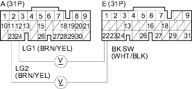
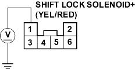

- Turn the ignition switch OFF.
- Disconnect PCM connectors A (31P) and E (31P).
- Press the brake pedal and measure the voltage between PCM connector terminals E22 and A23 or A24.
PCM CONNECTORS

Wire side of female terminals
Is there battery voltage?
YES - Release the brake pedal and go to step 9.
NO - Repair open in the wire between PCM connector terminal E22 and the brake pedal position switch. 
- Reconnect PCM connectors A (31P) and E (31P).
- Remove the shift lever console panel and the shift lever assembly mounting bolts.
- Remove the D3 switch/shift lock solenoid connector (6P) from the shift lever bracket, then disconnect the connector.
- Turn the ignition switch ON (ll).
- Measure the voltage between the No. 1 terminal of the D3 switch/shift lock solenoid connector (6P) and body ground.
D3 SWITCH/SHIFT LOCK SOLENOID CONNECTOR (6P)

Terminal side of female terminals
Is there voltage?
YES - Go to step 14.
NO - Repair open or short in the wire between the No. 1 terminal of the D3 switch/shift lock solenoid connector (6P) and the under-dash fuse/relay box.